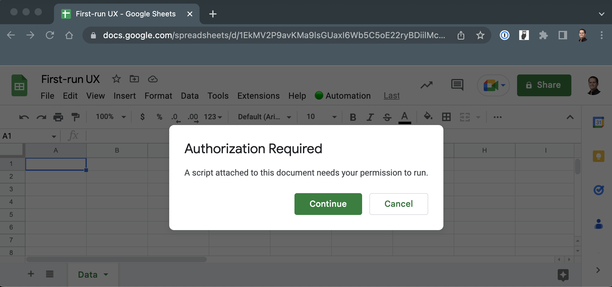
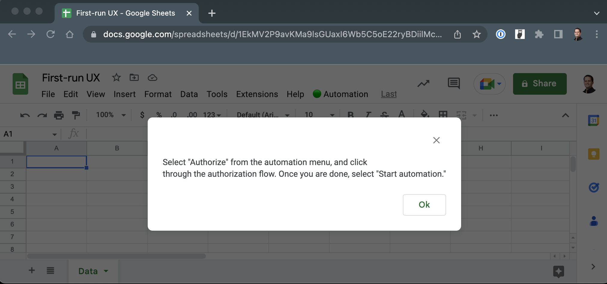
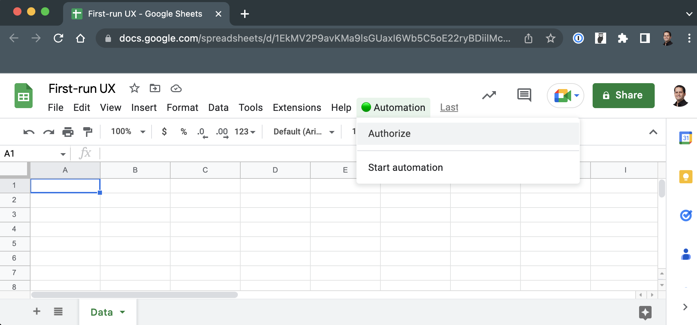
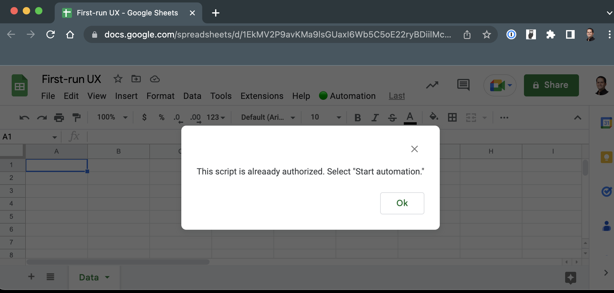
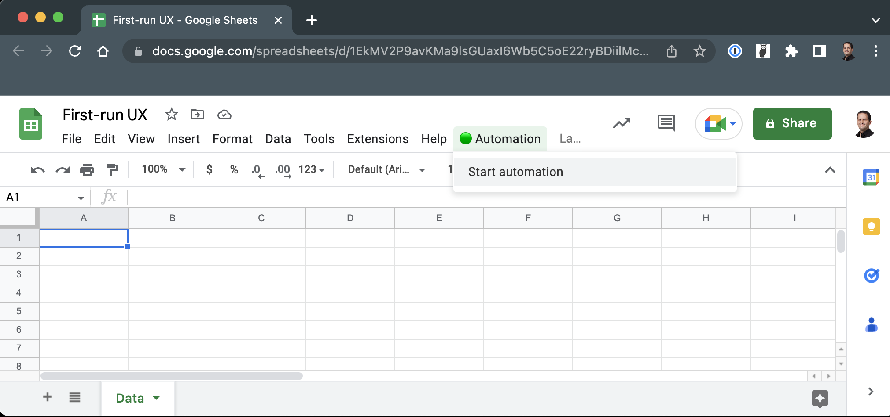

Custom menus in Google Sheets are a terrific way to let users kick off automation functions on their own terms. When we empower users to decide when and what automation to run, we improve the effectiveness of our automation code.
But custom menus have two issues when they're part of scripts that require access to sensitive or restricted scopes:
- Google requires the user to authorize the script the first time a user attempts to run it.
- Due to a current issue with the Apps Script engine, the function that the user selected to run from a custom menu will not run if an authorization is first required. The user will have to select the menu option again following successful authorization.
While these issues are not a big deal for experienced users, first-time users might find them daunting. In this post, we look at one implementation that can somehow alleviate these issues for first-time users.
At the core of this solution is the use of Apps Script's properties service. We'll use this service to check for the existence of a specific property. If we don't it then we know that the script wasn't authorized in a prior session, and we can change the user experience of the custom menu to be more supportive of the user.
First, let's create a standard function that displays a custom menu in a Google Sheet. Open a spreadsheet and access Apps Script. Inside Code.gs, insert the following code:
function onOpen(e) {
const ui = SpreadsheetApp.getUi();
const menu = ui.createMenu("🟢 Automation");
menu.addItem("Start automation", "start").addToUi();
}
function start() {
DriveApp.getFiles();
}The code above will insert a custom menu. The function start doesn't do anything visible, but it forces Apps Script to ask the user to authorize the script first:
We can make things easier for first-time users. We can use PropertiesService of Apps Script to check if we've set a specific property in the past. If not, then we can change the custom menu, as well as display an alert as soon as the spreadsheet opens for the first time by the user. Modify onOpen as follows:
function onOpen(e) {
const userProps = PropertiesService.getUserProperties();
const repeatUser = userProps.getProperty('repeatUser')
const ui = SpreadsheetApp.getUi();
const menu = ui.createMenu("🟢 Automation")
if (!repeatUser) {
menu.addItem("Authorize", "authorize")
.addSeparator()
.addItem("Start automation", "start")
.addToUi()
ui.alert(`Select "Authorize" from the automation menu, and click
through the authorization flow. Once you are done, select "Start automation."`)
} else {
menu.addItem("Start automation", "start").addToUi();
}
}Above, we first look for a user property named "repeatUser" (it can be called whatever you want). we use getUserProperties instead of getScriptProperties because we want to replace this experience for every user of the spreadsheet: not just with the first person who uses the custom menu.
If we don't have a "repeatUser" in place then we set the custom menu with an option to authorize the script, followed by a separator line, followed by the actual automation option. We also display an alert that instructs the user:
Once the user oks the alert and clicks the Automation menu, they see two options:
The authorize function doesn't do much but merely attempts to set the property and display an alert in case the user clicks "Authorize" multiple times. But the first time the user clicks the option, the function will not run because of the Apps Script issue mentioned above:
function authorize() {
setRepeatUser();
const ui = SpreadsheetApp.getUi();
ui.alert(`This script is already authorized. Select "Start automation."`);
}
function start() {
setRepeatUser();
DriveApp.getFiles();
}If the property does exist then no alert will be shown and the menu will have only one option:
We're adding a call to setRepeatUser to both authorize and start. This function is straightforward: Check for the existence of the property, and if it doesn't exist then set it in place:
function setRepeatUser() {
const userProps = PropertiesService.getUserProperties();
const repeatUser = userProps.getProperty('repeatUser');
if (repeatUser) {
return
}
userProps.setProperty('repeatUser', 'set');
}This solution isn't perfect, but at least it gives you an idea how to use properties service to make the experience of first-time users a bit clearer.